Une usine d'emballage souhaite installer un système pour réaliser le transfert à 90° des paquets d'une chaîne automatisée commandée par une carte électronique. Les ingénieurs doivent choisir la chaîne pneumatique la plus adaptée.
Exemple de transfert pneumatique de paquets à 90° (système industriel).
Télécharger les documents nécessaires :
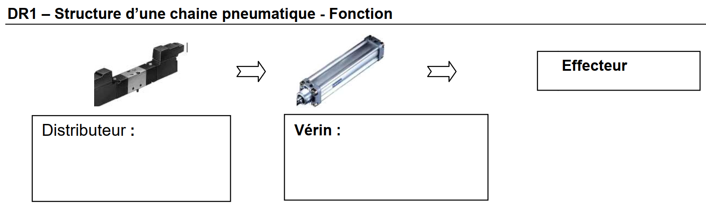
| Élément | Fonction |
|---|---|
| Source d'air comprimé | |
| Distributeur | |
| Vérin | |
| Effecteur |
Source d'air comprimé : fournit l'énergie pneumatique (air sous pression).
Distributeur : pré-actionneur qui oriente l'air comprimé vers une chambre du vérin ou vers l'échappement.
Vérin : actionneur qui convertit l'énergie pneumatique en mouvement linéaire (translation de la tige).
Effecteur : partie mécanique qui réalise la tâche (transfert du paquet à 90°).
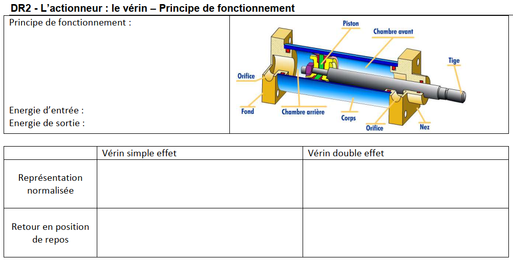
Principe de fonctionnement : expliquer comment fonctionne un vérin pneumatique.
Conversion d'énergie :
| Énergie d'entrée | Énergie de sortie |
|---|---|
Vérin simple effet – retour en position de repos :
Vérin double effet – retour en position de repos :
L'air comprimé est envoyé dans une chambre du vérin → la pression exerce une force sur le piston → la tige se déplace (mouvement linéaire).
Énergie d'entrée : pneumatique (air sous pression) · Énergie de sortie : mécanique de translation.
Vérin simple effet : une seule chambre alimentée, retour par ressort de rappel ou par charge externe.
Vérin double effet : les deux chambres peuvent être alimentées, sortie et retour commandés par l'air comprimé (sans ressort).
Principe de fonctionnement :
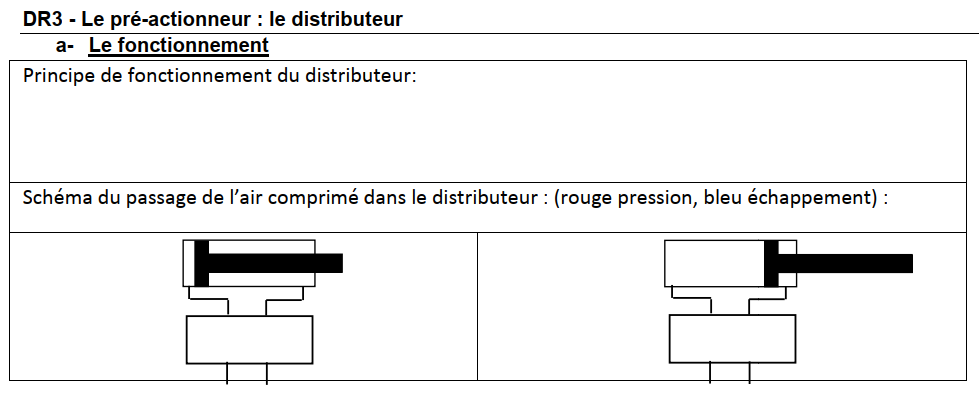
Distributeur 4/2 : donner la signification :
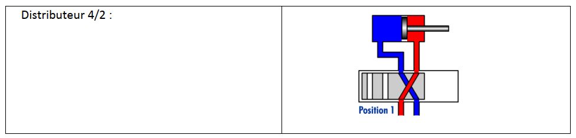
Le distributeur est une « vanne » qui, selon sa position, relie la source d'air à une sortie ou met cette sortie à l'échappement.
Distributeur 4/2 : 4 orifices (alimentation, échappements, sorties vers le vérin) et 2 positions stables.
Types de pilotage : donner la signification de chaque mode (mécanique, manuel, pneumatique, électrique).
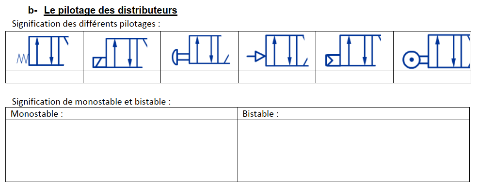
Monostable :
Bistable :
Pilotages : mécanique (galet, levier) · manuel (bouton-poussoir) · pneumatique (par pression) · électrique (électrovanne YV1, YV2…).
Monostable : une seule position stable (retour automatique en position repos par ressort).
Bistable : deux positions stables (reste dans sa dernière position jusqu'à un nouveau pilotage).
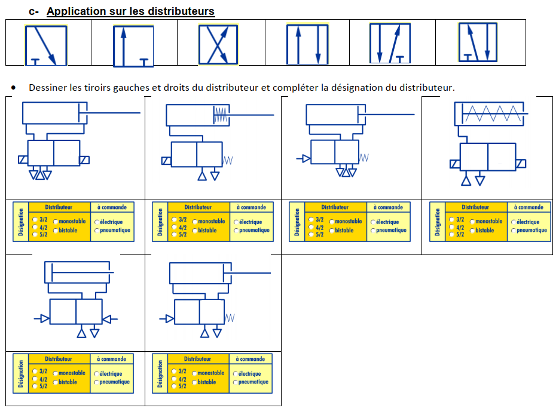
Exemples attendus : 3/2 monostable (BP + ressort) · 4/2 monostable (YV + ressort) · 5/2 bistable (YV1 / YV2).
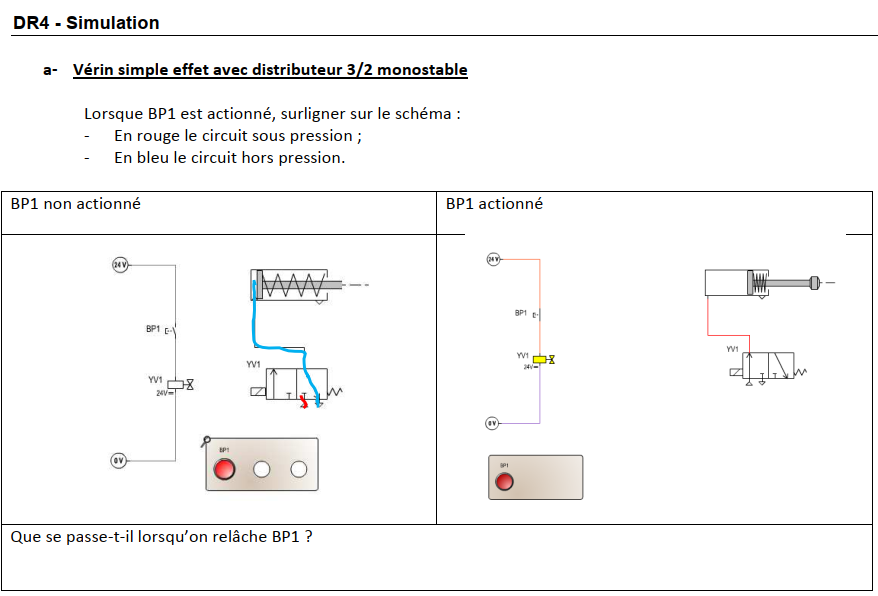
Q. Que se passe-t-il lorsqu'on relâche BP1 ?
BP1 appuyé : l'air alimente la chambre → la tige sort.
BP1 relâché : le distributeur revient en position repos (ressort) → la chambre est à l'échappement → le vérin revient en position de repos (ressort de rappel).
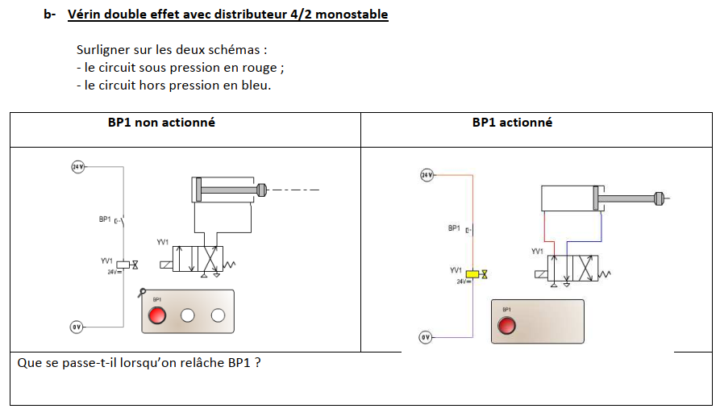
Q. Que se passe-t-il lorsqu'on relâche BP1 ?
BP1 non actionné : une chambre alimentée, l'autre à l'échappement → vérin en position repos.
BP1 actionné : inversion des chambres → la tige se déplace dans l'autre sens.
BP1 relâché : retour à la position initiale (monostable).
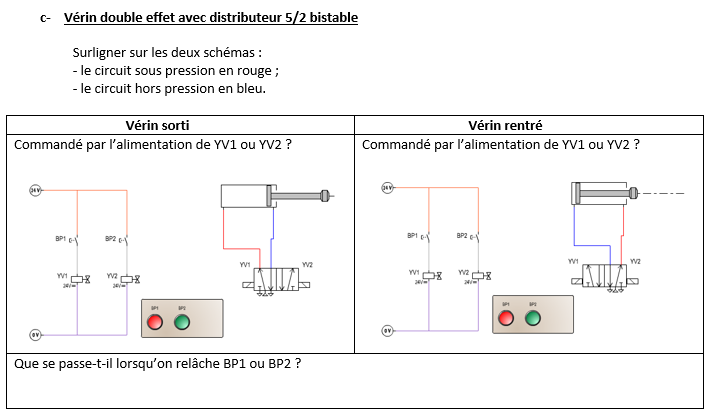
Q. Que se passe-t-il lorsqu'on relâche BP1 ou BP2 ?
Chaque impulsion (BP1 ou BP2) fait changer la position du tiroir et le distributeur reste dans cette position même après relâchement du bouton.
Le vérin garde sa position (sorti ou rentré) jusqu'à la prochaine action sur l'autre bouton.
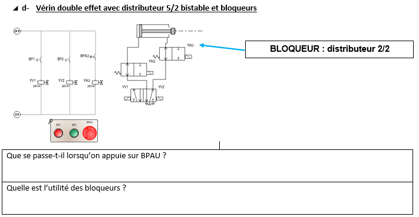
Q1. Que se passe-t-il lorsqu'on appuie sur BPAU ?
Q2. Quelle est l'utilité des bloqueurs ?
Q1. BPAU actionné : les bloqueurs (distributeurs 2/2) coupent l'alimentation d'air → le vérin se met en sécurité.
Q2. Les bloqueurs servent à sécuriser l'installation en cas d'arrêt d'urgence ou de défaut (coupure de la pression vers le vérin).
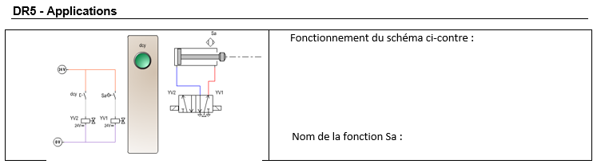
Fonctionnement de l'application :
Capteur Sa : nom et fonction :
Sa est un détecteur magnétique (type ILS) monté sur le vérin.
Il détecte la position de la tige (sortie / rentrée) et renvoie une information à la chaîne de commande pour déclencher la suite du cycle ou arrêter le mouvement.
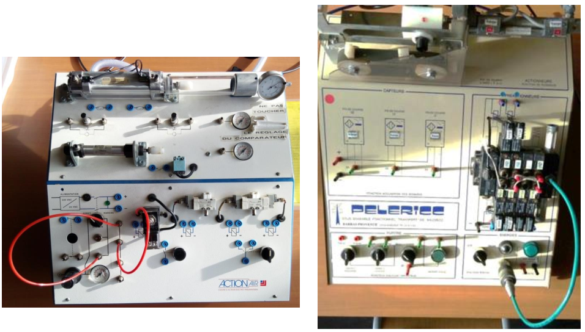
Le choix se porte sur un vérin double effet associé à un distributeur 5/2 bistable (éventuellement avec bloqueurs et capteurs de fin de course), car :
💨 Composants de la chaîne pneumatique
🔧 Types de vérins
🎛️ Types de distributeurs
✅ Choix pour transfert 90°
Vérin double effet + 5/2 bistable + capteurs Sa → contrôle précis et maintien de position.